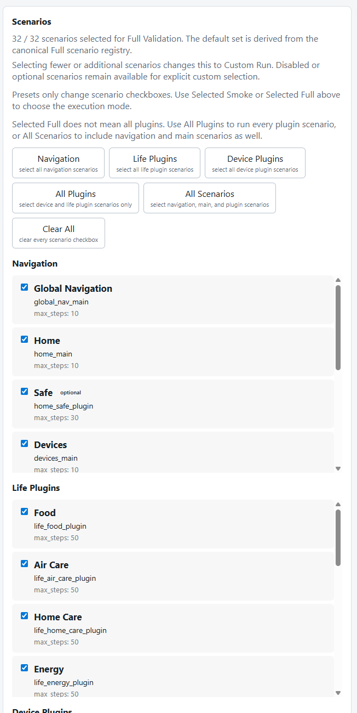
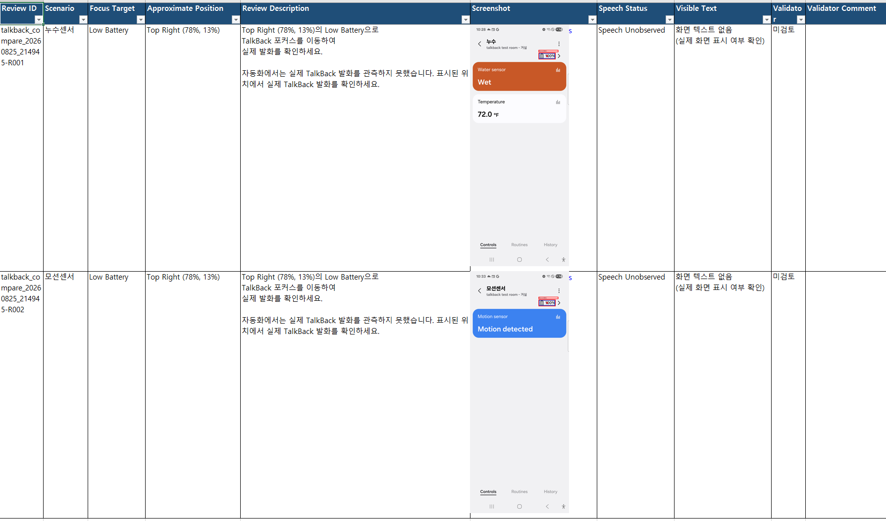

보고서 03 · 검증
검증 흐름
같은 Runner를 사용하더라도 실행 목적은 다릅니다. 32개 전체 검증 시나리오를 확인하는 Full Validation, 빠른 회귀를 보는 Quick Smoke, 특정 문제를 재현하는 Custom Run을 구분합니다.
정확한 전체 검증 목록
현재 source의 canonical_full_scenario_ids()가 반환하는 TAB_CONFIGS 전체 32개를 선택합니다. Clean launch, Full mode, Coverage Probe, Evidence Ledger, Identity V2, Production Traversal V2, Profiler가 실행 설정에 포함됩니다.
부분 선택은 Custom Run입니다. 전체 검증 목록은 runtime config의 enabled 값으로 줄어들지 않습니다.
목적에 맞는 부분 실행
Quick Smoke는 빠른 확인, Custom Run은 특정 시나리오나 장애 재현을 위한 입력입니다. 이 결과를 Full Validation의 승인 근거와 같은 의미로 해석하지 않습니다.
사용자 화면
시나리오 선택 화면

실행 순서
실행부터 판독까지
지원 모델, locale, TalkBack과 Helper 준비 상태를 확인합니다.
Runner가 시나리오, 오버레이, 스크롤, 복구와 중지 규칙을 조정합니다.
기본 보고서의 화면 정보는 실제 TalkBack 포커스 기준으로 저장하고, 대표 순회 정보는 별도 열로 보존합니다.
실행 결과물을 저장하고 품질 신호를 제품 접근성 검토와 자동화 진단으로 분류합니다.
발화와 화면 정보의 확인, 자동화 진단 확인과 Baseline 승인은 사람의 판단을 거칩니다.

runtime enabled ≠ 전체 검증 목록
저장소에 포함된 runtime_config.json에는 32개 항목이 있고 기본 enabled는 대상 실행용 1개입니다. 구현은 이 값을 전체 검증 목록의 정의로 사용하지 않고, source registry 전체를 기준으로 Full selection을 판정합니다.
정확한 계약은 scenario source와 run profile 문서를 참조합니다.